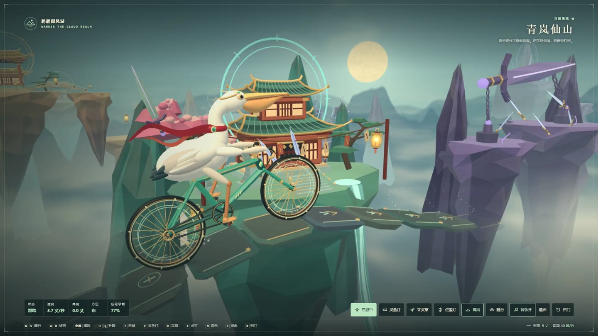

修仙感需要落在空间里
悬岛、檐瓦、剑阵、水帘、宝灯共同构成环境。用区域色彩、远近层次和可抵达的地标，建立值得骑进去的世界。
《云隙行》研究怎样把“3D 鹈鹕骑自行车”从视觉测试做成可操控、可观察的修仙世界。我们用程序化场景、轮脚同步和自动引路把骑行接到三处秘境，再通过完整界面实录核对动作、状态和结果。

悬岛、檐瓦、剑阵、水帘、宝灯共同构成环境。用区域色彩、远近层次和可抵达的地标，建立值得骑进去的世界。
轮胎跟着位移转，脚掌跟着脚踏走。上坡、下坡、滑行、落地和停靠，都需要对应的姿态与反馈。
让观众看见按钮、参数和操作过程。文案描述画面中能核对的能力，录制方式和后期音轨单独交代。
对话原文来自当前可见对话的用户原话节选。源码核对来自当前项目文件。整理版根据需求和现有实现重新组织，可继续复用。
内容依据本轮对话与本地工程整理。历史助手给出的完整音乐生成提示词在当前上下文中缺失，提示词库中的音乐文本为本次重写。
研究的重点是哪些画面需要持续依赖运行状态，以及怎样用普通玩家能看到的反馈确认它们。做法可以迁移到 3D 交互原型、游戏关卡、互动讲解和效果验收。
已实现五类区域有不同的地标和光色。路段随方向与速度向前生成，遇障缩短，身后逐渐淡出。
可复用用有限前瞻组织探索路线，把区域风格、地标和行进节奏组合到关卡原型。
已实现实际位移驱动车轮，齿比和踩踏接合程度决定曲柄。探针碰撞与接地状态影响姿态和后轮承载。
可复用让动画与运行状态共用依据，用轮速、踏频和接触读数定位跳帧、滑步及坡道问题。
已实现自游会避障、起降，并在满足条件时前往秘境。通过引路、靠岸、动作反馈与返回车座完成访问。
可复用把观光导览或角色活动拆成可检查的阶段，让玩家理解当前目标，也能随时接管骑行。
已实现两首曲目可以切换。平稳的地面自游按预设参考轻调踏频，滑行与飞行退出适配。
可复用将配乐节奏作为动作的可选输入，用接地、坡度和转向控制介入程度。
已实现约 80 秒完整界面实录保留按钮、场景说明与实时数据，连续呈现自游、升空、捕鱼、采草和点灯。
可复用以实录和操作验收检验展示结论，配合 12 条整理版提示词重做机制或继续迭代。
碰撞与载荷采用游戏化近似，秘境是预设目的地，音乐使用曲目配置。一次实录记录这次成功游历，复杂路径与跨设备表现仍可继续测量。
图中沿用此前生成的《云隙行》复盘图。五张截图来自同一次连续实录，时间点可与视频核对。
打开原尺寸引导图
按讨论顺序整理。时间线描述需求如何变化，具体能力以当前实现和实录为准。
“你先试试3D鹈鹕骑自行车测试”
角色形体、自行车结构、踩踏动作和三维观察成为起点。随后对 GIF 的追问，提醒我们说明交付物究竟是动画还是可交互程序。
“鹈鹕支持自由骑行，可以上天”
“骑行时路才随机出现前面长度的”
确立修仙主题、自由控制与御风飞行。天路只在前方有限距离显现，后方逐渐消散，形成边骑边展开世界的体验。
“这里你的休闲场景元素构建不够好”
“修仙场景”
主题被明确纠正为修仙。把“多元化、修仙化、精品化”落实为区域差异、建筑结构、器物细节、景深和探索动线。
“这里没有碰撞吗？”
“动物没有状态吗？”
“后轮没有承载吗？”
增加接触、避障、承载、姿态和动物状态的对应关系。自主漫游也成为明确需求，让鹈鹕自己选择路径并继续探索。
“比如去到某个小岛上吃鱼”
“自游时也能自己过去，采草和点灯都要有看得见的动作。”
形成灵鱼汀、瀑隐坞、灯河夜渡三处互动。接近、停靠、下车、行动、结果反馈和回车，组成完整的小段体验。
“一卡一卡的 不符合轮胎转动速度”
“上坡，下坡，平行，还有轮胎速度，人的骑行频率应该做对应。”
统一实际滚动距离、轮胎转角、齿比、曲柄相位和脚掌位置。下坡滑行时允许脚踏逐渐停止，轮胎继续滚动。
“骑行速度应该根据音乐的节奏来适配呢？”
“你就不能两个音乐都支持？”
先接入《Steps Across the Valley》，再加入《乘风啸过重山》。最终保留两首曲目，各自配置踏频参考，通过「选曲」切换。
“为什么没有我们相关的按钮和参数，左上角和右上角的相关描述”
“以真实效果为准”
早期去界面的剪辑版被否定。重新从普通页面录制，保留完整 UI 和实时读数，交付约 80 秒的连续体验。
统一低多边形造型语言，用中式建筑、云雾、法器和自然地貌构建仙侠意象。
鹈鹕的长喙、喉囊、红围巾与青绿色自行车，保持清楚的主角识别。
近处是车轮与路面，中景是可抵达的泊台、亭阁和飞剑，远处是云海与山体剪影。
瀑布引导绕行，灯火吸引夜渡，鱼池对应停靠。物件与角色行动形成联系。
青云观、云上亭阁、松树与悬瀑
青绿 · 开阔 · 启程飞剑、剑台、裂隙与紫电
紫灰 · 险峻 · 御风浮莲、宝灯、灵珠与月下水岸
夜蓝 · 暖灯 · 静谧朱门、金瓦、照壁与悬铃
金赤 · 层叠 · 壮阔桃花、悬岛、山泉与水帘
粉霞 · 轻盈 · 秘境下面记录当前实现的关系，也保留实现简化之处，方便下一轮排查。
轮胎角度由实际滚动距离和轮半径计算。曲柄通过平滑变化的齿比与踩踏接合程度跟随车轮，角色脚掌绑定脚踏位置，再求膝盖姿态。踏频由实际曲柄转量计算。
上坡依据坡度和驱动力减速、调整姿态与齿比。下坡允许自由滑行，踩踏接合逐渐释放；刹车、受阻与停靠同样进入对应状态。
分别计算前后轮触点、车身俯仰与支撑高度。承载读数结合接触、坡度和加减速变化，轮胎形变与压地反馈跟随状态。
承载是用于表现和控制的近似量。初始后轮负载约 62%，具体读数会随骑行改变。
通过多个探针与岩体、建筑等碰撞体检测接触，包含移动过程中的检查、支撑面查询和前方阻碍评估。
当前使用简化形体与探针，复杂檐口和窄缝仍值得专门复查。
头颈、翼、腿、喙、喉囊和围巾组合响应当前状态，叠加眨眼、呼吸、探看和受撞反馈。
当前状态集中于动作与运动，饥饿、体力、修为等持续养成数值可另行设计。
自游会选择方向与目标、评估障碍、调整转向，遇阻时刹车、后退或升空。方向与升降操作可以接管骑行。
当前秘境自动访问按鱼、草、灯的候选顺序检查。每次重置后各自动尝试一次，距离需在触发范围内；手动仍可再次发起引路。
依照位置、方向、速度与飞行高度预测有限长度的道路，变化石板类型和宽度，尽头淡出。后方保留短时轨迹，轮下另有稳定的支撑段；遇到阻碍会缩短前方预测。
这里的世界展开感来自程序生成与有限前瞻。速度、转弯和升降时，重点观察石板是否连续、车轮是否贴合、尾迹消散是否自然。
平路看实际位移、轮速、曲柄和左右脚是否连续对应。
上坡看俯仰、前后接触、负载与降速是否一致。
下坡看滑行时脚踏逐渐停住、车轮继续滚动是否自然。
急转与倒车看脚掌贴合、转向姿态、路面连接和轮转方向。
飞行与落地看离地接触归零、下降支撑恢复和落轮缓冲。
碰撞与停靠看长喙和檐口、轮胎和平台边缘，以及下车后脚架是否承重。
音乐方向从“仙侠、空灵”出发，兼顾旅行感、节拍与场景中的留白。当前游戏支持两首本地曲目。
较强的鼓点适合起飞与跨越云海。配置了较柔和的段落与片尾退出区间，在稳定骑行时轻度引导踏频。
保留这首歌作为另一种漫游选择。34 转/分是当前配置值，当前文件未配置独立拍点相位参考。
仅在普通自游、音乐正在播放、双轮接地且速度合适时介入。速度修正上限约为基准速度的 5%。
坡度增加、转向变急时逐渐减弱；滑行、受阻、飞行和秘境引路阶段绕开这层适配。
通过平滑调整目标齿比影响踏频。《乘风》额外施加小幅相位修正，脚踏不直接跳到拍点。
当前适配读取每首曲目的预设参数，尚未接入实时节拍识别。目标踏频会受到速度、齿比范围和混合权重约束。
进入游戏后，点击底部「选曲」选择曲目。按 M 或点击音乐按钮暂停、续播；播放中切歌会从新曲开头播放，暂停时切歌保持暂停。两首曲目均内嵌到游戏 HTML，可离线循环。首次播放由用户操作触发，音量淡入至 38%。
曲目配置见 build.mjs，播放状态见 music.js，跟拍条件见 engine.js · matchMusic。
用笛箫、古琴或古筝的疏朗旋律，配柔和弦乐、空气感铺底与适度鼓点。保留段落起伏，让起飞有推力、停靠有呼吸。
围绕山海、行旅、云路、灯火等意象写短句，人声克制，副歌易记。歌词留空段，给场景动作和观看注意力让出空间。
以下均为本次汇总的整理版，包含目标、约束和验收观察点。可按任务拆开使用，继续补充具体工程与素材路径。
用户对去界面录制的质疑，形成了这轮项目非常具体的一条发布要求。
“以真实效果为准”用户对录屏展示的明确要求
时间点为本次实录的观看索引。点击会定位并尝试播放；不代表每次自游都在相同秒数到达。
从普通游戏页面开始，通过点击「开启自游」进入。画面保留左上标识、右上场景说明，以及底部操作、速度、高度、后轮承载和踏频。视频连续录制、原速导出；采集帧按时间戳输出为 30 fps。
配乐《乘风啸过重山》按页面播放起点约 2.126 秒后期对齐合入，音量与淡入参考页面配置。30 fps 描述视频导出规格，运行流畅程度仍需结合实际设备观察。
单独录制 3D 画面，隐藏操作 UI，拼接场景镜头并配乐。用户指出按钮、参数和角标缺失，展示方式不符合要求。
这份文案描述当前实录内容。当前存档没有已发布的 X 帖子链接。
从这里进入可玩的原型、完整实录和对应源码。
| 文件 | 负责什么 |
|---|---|
| engine.js | WebGL 渲染、场景切换、输入、互动引路、HUD 与音乐适配 |
| world.js | 区域、悬岛、亭阁、剑阵、植被与器物的程序生成 |
| motion.js | 骑行动力、轮胎与曲柄、接地、承载、飞行与天路 |
| collision.js | 碰撞探针、形体接触、支撑面与阻碍检查 |
| rider.js | 鹈鹕、自行车、姿态、脚踏绑定与活动动作 |
| autopilot.js | 自游目标、转向、避障、起落与脱困 |
| fish-island.js / herb-cove.js / lantern-stop.js | 三处秘境地貌、泊台、路线与互动目标 |
| music.js / build.mjs | 音频播放状态、双曲目配置与离线内嵌打包 |
| shell.html | 界面结构、控制按钮、角标、参数和响应式布局 |
动作连续性低帧率、急转、倒车与强坡度时，轮转和脚掌是否仍连续。
复杂接触屋檐、窄缝、泊台边缘和长喙是否出现穿插。
探索持久性采集与点灯能否形成可恢复、可重复的探索进度。
音乐适配先测实际跟拍效果，再决定是否加入更多曲目的离线拍点分析。
录屏可信度继续保留完整界面，考虑把系统声音与视频同步采集。
发布反馈记录观众最先理解了什么，再调整镜头和文案。
这些是从本轮讨论归纳的后续验证方向，尚未作为本次新增功能实现。